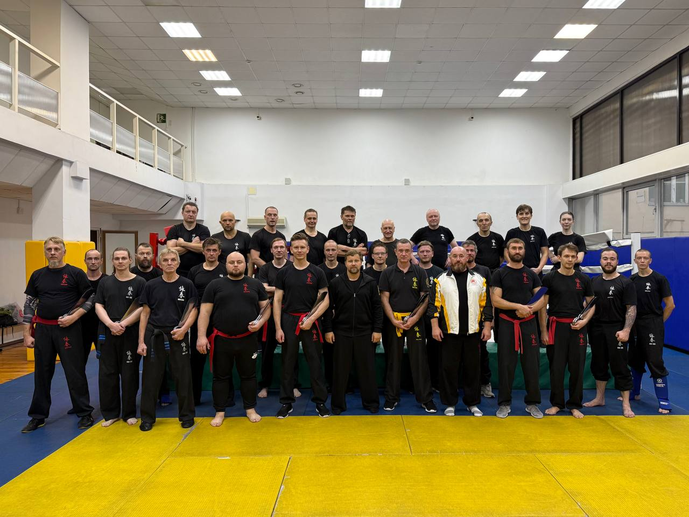

19–20 сентября 2026 года в Санкт-Петербурге состоялись семинары Федерации Вин Чун России под руководством СиФу Анатолия Белощина и старшего инструктора Александра Павлова-Русинова.
СиФу Анатолий Белощин подробно разобрал технику деревянного манекена Muk Yan Chong Fat и форму «8 ног», раскрывающую ударную технику ног Вин Чун.
Александр Павлов-Русинов рассматривал поглощение и пропускание силы при избыточном давлении противника — концепцию «уступи, чтобы победить», а также адаптацию Вин Чун против тайских клинчей, размашистых оверхендов и других нестандартных атак. В видео второго дня также отмечена работа над ведением поединка на четвёртом и пятом уровнях обучения.
В семинарах по техникам манекена и «8 ног» участвовали студенты IWCO из Санкт-Петербурга, Москвы, Вологды, Калуги, Всеволожска, Гатчины, Калининграда и Швейцарии.
Ниже — видео первого и второго дня, а также дополнительная запись, опубликованная 2 октября.
В телепрограмме «Путь дракона» гранд-мастер Дональд Мак, президент Международной Организации Вин Чун IWCO, рассказывает об истории и основных направлениях Вин Чун.
В августе был опубликован анонс двух семинаров старшего инструктора Федерации Вин Чун России Александра Павлова-Русинова на 19–20 сентября в Санкт-Петербурге.
19 сентября — поглощение избыточного давления противника: концепция «уступи, чтобы победить».
20 сентября — адаптация Вин Чун против нестандартных атак: тайских клинчей, размашистых оверхендов, круговых ударов и других атак.
Семинары не были привязаны к программе обучения IWCO и предлагались всем студентам IWCO и Федерации. Время проведения — 11:00–18:00. Контакт по вопросам участия — Алексей Борзов.
Это архивный анонс. Итоги семинаров опубликованы отдельной новостью.
Ведущие выпуска — старший инструктор Федерации Вин Чун России Дмитрий Шевченко и инструктор, руководитель Нижегородского отделения Федерации Андрей Воронов.
В июле был опубликован анонс семинаров СиФу Анатолия Белощина на 19–20 сентября 2026 года в Санкт-Петербурге.
Техника деревянного манекена — Muk Yan Chong (木人樁).
Форма «8 ног».
На семинар по манекену приглашались члены Федерации, изучившие Biu Dze. Занятие по форме «8 ног» предназначалось для студентов, ранее изучавших Muk Yan Chong под руководством СиФу Анатолия Белощина.
В анонсе указаны время 11:00–18:00 с часовым перерывом и адрес: Санкт-Петербург, Кронверкский проспект, 9Б. Контакт по вопросам участия — Алексей Борзов.
Это архивный анонс. Итоги сентябрьских семинаров опубликованы отдельной новостью.
Вин Чун на фестивале исторических азиатских боевых искусств
12–13 июня 2026 года в Санкт-Петербурге прошёл второй фестиваль исторических азиатских боевых искусств. В программу вошли спарринги с различными видами оружия.
В опубликованном видео Сергей Дягтерев, представитель Федерации Вин Чун России и IWCO, участвует в поединках с шестом/копьём и ножами Дао.
В Федерации и IWCO изучению оружия Вин Чун уделяют внимание наряду с рукопашным боем: техника ножей Дао и шеста помогает глубже понять работу без оружия.
Семинар Александра Павлова-Русинова на летних сборах
На летних сборах Федерации Вин Чун России, стартовавших 10 июня 2026 года в Дилижане, состоялся семинар старшего инструктора Александра Павлова-Русинова.
10 июня 2026 года стартовали летние сборы Федерации Вин Чун России в Дилижане, Армения.
Сборы проводят президент Федерации СиФу Анатолий Белощин и старшие инструкторы Александр Павлов-Русинов, Дмитрий Шевченко и Динаев Осман.
К 16 июня были проведены девять семинаров и тренировок по технике ножей Дао. В ходе занятий участники рассмотрели практически весь комплекс этой техники.
VIII детско-юношеский чемпионат: результаты и видео
25–26 апреля 2026 года в Сергиевом Посаде прошёл VIII ежегодный открытый чемпионат по Вин Чун — «Всероссийский детский юношеский кубок». В июне Федерация опубликовала результаты, а в июле — видео соревнований.
3 мая 2026 года в Санкт-Петербурге в рамках фестиваля единоборств «Кубок Героев» состоялись соревнования Федерации Вин Чун России и Международной Организации Вин Чун IWCO.
Соревнования прошли в двух номинациях:
Чуен Тонг Чи Сао / 傳統黐手 — контактное Чи Сао на ограниченной площадке.
03 мая 2026 года в Санкт-Петербурге в рамках фестиваля "Кубок Героев" пройдут соревнования Федерации Вин Чун России.
Соревнования по Вин Чун будут проводиться в двух номинациях:
- Чуен Тонг Чи Сао / 傳統黐手 - Контактное Чи Сао на ограниченной площадке;
- Дуи Конг Чой / 對抗 - свободный поединок в защитном снаряжении.
К участию приглашаются члены Федерации Вин Чун России.
Пройти регистрацию можно по кнопке ниже:
Соревнования проводятся по адресу: Санкт-Петербург, Софийская ул., 14, корп. 2Б (этаж 2), Фабрика футбола. Начало соревнований в 10:00.
Семинар по манекену, мечам, 4-му уровню и аттестации 7-8 февраля 2026
В Санкт-Петербурге завершился 2-х дневный семинар по технике деревянного манекена (Мук Ян Джонг) и корректировке техники мечей дао. Спасибо огромное Анатолий Белощин за проведенный семинар.
На втором татами параллельно проходил семинар по 4 уровню. Разбирались принципы и нюансы в парной работе по техникам Чам Кью. Также проходила аттестация на 3, 5 и 6 уровни. Спасибо огромное за проделанную работу Александру Павлову-Русинову.
Хочется поздравить всех студентов, успешно сдавших экзамен на новый уровень! Отдельно хочу выразить дань уважения и поздравить с закрытием 6 cup - Александру Лиманову. Этого человека мы всегда ставим в пример молодым тиграм до 70 лет!)
Вывод по семинару - теперь точно можно сказать - что мы знаем кунг фу! Криво, не проработано в достаточной мере, но всю возможную информацию по техникам Вин Чун - мы получили!) И это очень ценно и круто! Теперь буду их оттачивать, пока не будет «звенеть»!)
Золотой уикенд IWCO: яркие победы и благодарности команде
Гул трибун, звон медалей и заряд адреналина — наши бойцы снова зажгли зал! Турнир завершился для команды IWCO СПб россыпью наград: Илья Безбородько — 🥇 в файте, сдержал себя, чтобы дать шанс другим; Алексей Борзов — 🥇 в файте; Павел Гагаринов — 🥇 в файте, 🥇 в чисао, 🥈 в формах с мечами; Анастасия Бузина — 🥇 в файте, 🥈 в ГоуСао, 🥈 в чисао, 🥉 в формах ЧК; Александр Бугаев — 🥇 в ГоуСао, 🥈 в файте, 🥈 в чисао; Андрей Румянцев — 🥉 в чисао; Павел Саблин — 🥉 в чисао; Дмитрий Воронецкий — 🥉 в формах СЛТ; Сергей Дегтярев — 🥇 в формах ЧК.
Каждый бой — отдельная история, но все они сложились в один громкий триумф. Поздравляем спортсменов с заслуженными наградами и спасибо нашим болельщикам за мощную поддержку!
Отдельная благодарность судейской бригаде: Маник Илья — за четкую жеребьевку и организацию, Кузяков Денис, Васильев Алексей и Павел Гагаринов — за честное судейство в углу ринга. Благодаря вам турнир прошел ровно и прозрачно.
Готовимся к следующему старту
Не успели остыть эмоции, а уже планируем следующий большой турнир. «Кубок России по Вин Чун 2026»
На коврах и рингах встретятся мужские, женские и детские составы в дисциплинах: Кюнь Тао (все формы, включая СЛТ, Чам Киу, Биу Дзе, манекен, шест и мечи Дао), контактное Чи Сао, Гуо Сао и Дуи Конг Чой. Не пропустите — впереди новый всплеск эмоций, новый вызов и новые вершины!
8 февраля 2025 г. состоялся Кубок Санкт-Петербурга по Вин Чун
Соревнования проходили в дисциплине Дуи Конг Чой / 對抗 (свободный поединок в защитном снаряжении).
Организаторы соревнований: Санкт-Петербургское региональное отделение "Федерации Вин Чун России" и Международной Организации Вин Чун (IWCO).
В соревнованиях приняли участие школы из: Москвы, Санкт-Петербурга, Донецка, Калининграда, Гатчины, Сергиев-Посада, Фрязино.
22 февраля 2025 в г. Санкт-Петербурге успешно прошел семинар по изучению техник BIU JEE и способам их применения в поединке. В семинаре приняли участие студенты и инструктора из Санкт-Петербурга, Москвы, Гатчины, Всеволожска.
Семинар проводил Инструктор Международной Организации Вин Чун Александр Павлов-Русинов.
Корректирующий семинар по техникам и спортивной форме шеста LOK DIM BOON KWUN (六點半棍)
23 февраля 2025 в г. Санкт-Петербурге успешно прошел корректирующий семинар техникам длинного шеста Вин Чун, на семинаре были разобраны и проработаны основные стойки, используемые для работы с шестом, отработана по элементам спортивная форма и отдельное внимание было уделено одиночным и парным упражнениям. В семинаре приняли участие «старшие» студенты IWCO-Санкт-Петербург.
Семинар проводил Инструктор Международной Организации Вин Чун Александр Павлов-Русинов.
Мини соревнования в рамках фестиваля боевых искусств «Кубок Героев»
В воскресенье 13 апреля 2025 года, планируются соревнования для начинающих по двум дисциплинам
1. Кюнь Тао ( KuenTao, 拳套). Демонстрация формы Вин Чун Сиу ЛимТао.
2. Чуен Тонг Чи Сао (ChuenTongChiSao, 傳統黐手 ). Чи Сао на ограниченном пространстве без использования защитного снаряжения.
Большой тренировочный летний лагерь Федерации Вин Чун России и IWCO под руководством СиФу Анатолия Белощина и ведущих инструкторов ФВЧР и IWCO!
Внимание для всех членов Федерации Вин Чун России и просто тех, кто хочет поднять свой уровень мастерства в Вин Чун, набраться здоровья на весь год и хорошо отдохнуть в красивейшем месте России!!!В этом году в тренировочных сборах могут принять участие как взрослые так и дети от 6-ти лет в сопровождении родителей!!!
С 4 по 11 июля 2025 года будет проходить Большой Тренировочный лагерь IWCO под руководством СиФу Анатолия Белощина и ведущих инструкторов ФВЧР и IWCO, а также Всероссийские соревнования «Кубок памяти Чоу Дзе Чуена»
В программе семинары и мастер классы СиФу Анатолия Белощина для инструкторов и студентов IWCO и Федерации Вин Чун России.
Большой тренировочный лагерь в Олимпийской деревне Роза Хутор (г. Сочи, Красная поляна).
Долина «Роза Плато» расположена на круглогодичном курорте «Роза Хутор» на высоте 1170 метров над уровнем моря, где совсем недавно располагалась Горная Олимпийская Деревня - один из знаковых объектов Зимних Олимпийских игр 2014 года в Сочи. Здесь жили и готовились к выступлениям спортсмены стран участников Игр. И сейчас Вы повсеместно можете видеть флаги стран-участниц Олимпиады. Деревня занимает площадь 32 гектара в живописном месте с прекрасными панорамными видами на горы Аибга и Псехако.
Большой тренировочный лагерь в Олимпийской деревне в Сочи, это уникальная возможность, потренироваться, посетить несколько семинаров СиФу Анатолия Белощина и ведущих инструкторов Федерации, набраться сил и здоровья в уникальном природном заповеднике, посмотреть Олимпийские объекты, отдохнуть на море и в горах всей семьей и все это в одном месте! Для участия необходимо в указанный срок заполнить заявку на участие. Заявку заполняет инструктор/руководитель группы, на всех своих участников. Если вы один, заполняете индивидуальную заявку!
По всем вопросам обращаться к своему инструктору или в телеграмм +79500079338 @IWCOSPB Динаев Осман Русланович
Сборы проводят:
СиФу Белощин Анатолий Анатольевич
Инструктор IWCO Павлов-Русинов Александр Михайлович
Инструктор IWCO Шевченко Дмитрий Викторович
Инструктор IWCO Динаев Осман Русланович
Итоги Большого тренировочного лагеря в Сочи: 7 дней интенсивного Вин Чун для взрослых и детей под руководством СиФу Анатолия Белощина
С 4 по 11 июля 2025 года в Олимпийской деревне «Роза Хутор» успешно прошел масштабный летний лагерь Федерации Вин Чун России и Международной Организации Вин Чун (IWCO). Участники от 6 лет и старше погрузились в интенсивный тренировочный процесс, совмещенный с отдыхом в уникальном горном заповеднике.
Уникальный формат для всей семьи
В этом году лагерь впервые был организован в обновленном формате, объединив под эгидой Федерации Вин Чун России практикующих всех школ и направлений. Отдельная детская секция, работавшая под руководством инструктора Цовинар Маркарян, позволила семьям заниматься Вин Чун вместе, делая искусство доступным для всех возрастов. Программа была выстроена так, чтобы каждый участник мог поднять свой уровень мастерства, укрепить здоровье и зарядиться энергией на весь год.
Интенсивная программа: от основ к тонкостям работы с оружием
За семь дней было проведено 18 насыщенных тренировок, каждая из которых была посвящена отработке конкретных технических блоков искусства Вин Чун.
Первый день участники посвятили отработке техник «Гуо Сао», подсечек и бросков, закладывая прочную основу для последующих занятий.
Второй и третий день погрузили практикующих в сложный и эффективный мир работы с оружием. Тренировки были сфокусированы на технике ножей «Бат Чам Дао» и работе с шестом «Муй Фа Джонг».
Четвертый день был посвящен тонкостям исполнения формы «Чам Киу» и применению техник «Биу Дзе». Особое внимание уделили отработке блоков и срезов ногами.
Заключительные дни лагеря, с пятого по седьмой, первоначально планировались для отработки «Чи Сао», однако по запросу участников были посвящены углубленной парной работе с мечами Дао. Детская группа в это время осваивала технику парных мечей и перешла к учебным поединкам без оружия.
Мастера и наставники
Тренировки и семинары проводила команда ведущих специалистов под общим руководством СиФу Анатолия Белощина, Президента Федерации Вин Чун России и Вице-Президента IWCO. В работе со взрослыми группами также участвовали старшие инструкторы Федерации Александр Павлов-Русинов и Осман Динаев.
СиФу Анатолий Белощин поделился своими впечатлениями: «Для нас было ключевым создать среду, где и начинающий, и опытный практик сможет найти вызов для себя. Решение посвятить финальные дни парной работе с Дао — это яркий пример гибкости подхода, отвечающего запросам нашего сообщества. Мы видим, как Вин Чун в России выходит на новый уровень, становясь настоящим семейным искусством, объединяющим поколения». Участники лагеря не только значительно повысили свой технический уровень, но и получили уникальный опыт погружения в дисциплину, тренируясь в атмосфере олимпийского наследия. Совмещение интенсивной практики, горного воздуха и общения с единомышленниками делает такие выездные мероприятия мощным инструментом для личного роста и укрепления духа сообщества Вин Чун в России. Хотите погрузиться в мир Вин Чун и не пропустить следующие события? Следите за анонсами на нашем сайте и записывайтесь на тренировки в вашем городе, чтобы стать частью нашей команды!
Корректирующий семинар по технике Bart Cham Dao (ножи)
20 сентября 2025 в г. Санкт-Петербурге успешно прошел семинар по по технике Bart Cham Dao (ножи) и способам их применения в поединке. На семинар были приглашены ТОЛЬКО студенты Федерации Вин Чун России уже прошедшие (!) обучение вышеуказанной техники по программе IWCO.
Семинар проводил Президент Федерации Вин Чун России и Вице-Президент IWCO СиФу Анатолий Белощин.

Вин Чун в свободном поединке
В свободном поединке Вин Чун изучает применение базовых принципов и техник в условиях нестабильной и динамичной обстановки. Основной фокус делается на развитии чувствительности, контроля дистанции и мгновенном принятии решений для эффективной нейтрализации атаки.
Семинар проводил Старший Инструктор Международной Организации Вин Чун Александр Павлов-Русинов.
"Кубок России по Вин Чун 2025" в рамках Международного фестиваля «Легенды Кунг-фу»
В субботу и воскресенье 13-14 декабря 2025 года в г. Москва планируется проведение "Кубка России по Вин Чун 2025" в Универсальном спортивно-зрелищном комплексе «УСЗК» «ГЦОЛИФК» по адресу: улица Сиреневый бульвар, стр 2
Дисциплины соревнований (в мужской, женской и детской номинациях):
1. Кюнь Тао / 拳套 (Техническая дисциплина)
- Кюнь Тао Сиу Лим Тао
- Кюнь Тао Чам Киу
- Кюнь Тао Биу Дзе
- Кюнь Тао Мук Ян Джонг (манекен)
- Кюнь Тао Лук Дим Бун Квун (длинный шест)
- Кюнь Тао Бат Чам Дао (мечи Дао)
2. Чуен Тонг Чи Сао / 傳統黐手 - Контактное Чи Сао на ограниченной площадке
3. Гуо Сао / 過手 – Поединок из предварительного контакта одной руки
4. Дуи Конг Чой / 對抗 - свободный поединок в защитном снаряжении
По всем вопросам участия в соревнованиях обращаться:
Тел.: +7-950-007-93-38, E.Mail: iwcospb@gmail.com
Тел.: +7-977-400-02-60, E.Mail: wingchunkuen50@yahoo.com
Для школ/представителей школ, не являющимися членами Федерации Вин Чун России или не участвовавших в совернованиях в 2024 и/или 2023гг., требуется получить согласие Федерации на участие в соревнованиях.
Зарегистрировавшиеся сторонние спортсмены без соблюдения этого требования - не будут допущены до соревнований!!!